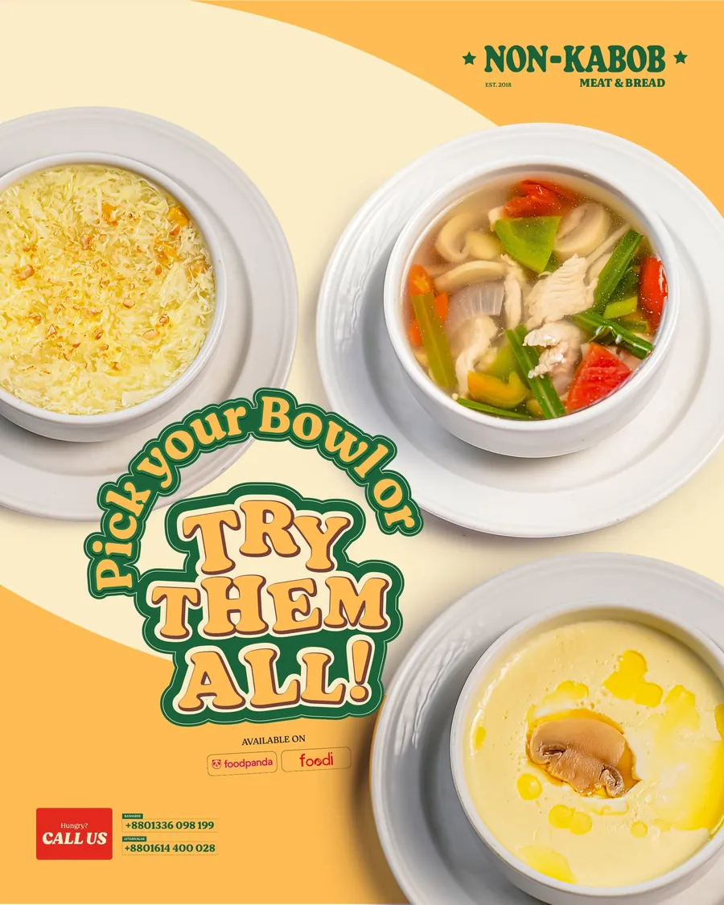
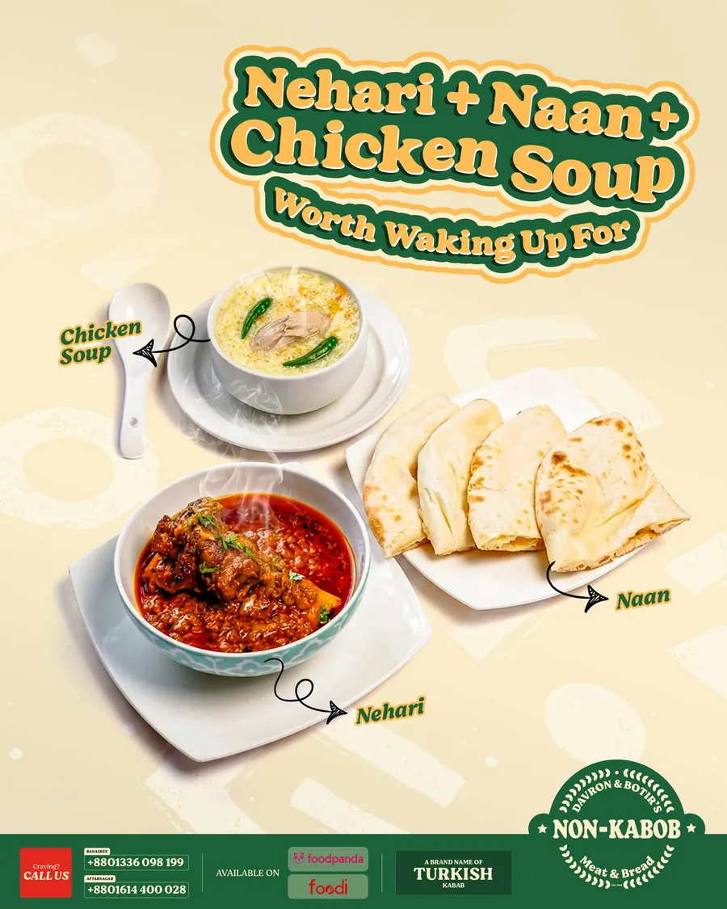
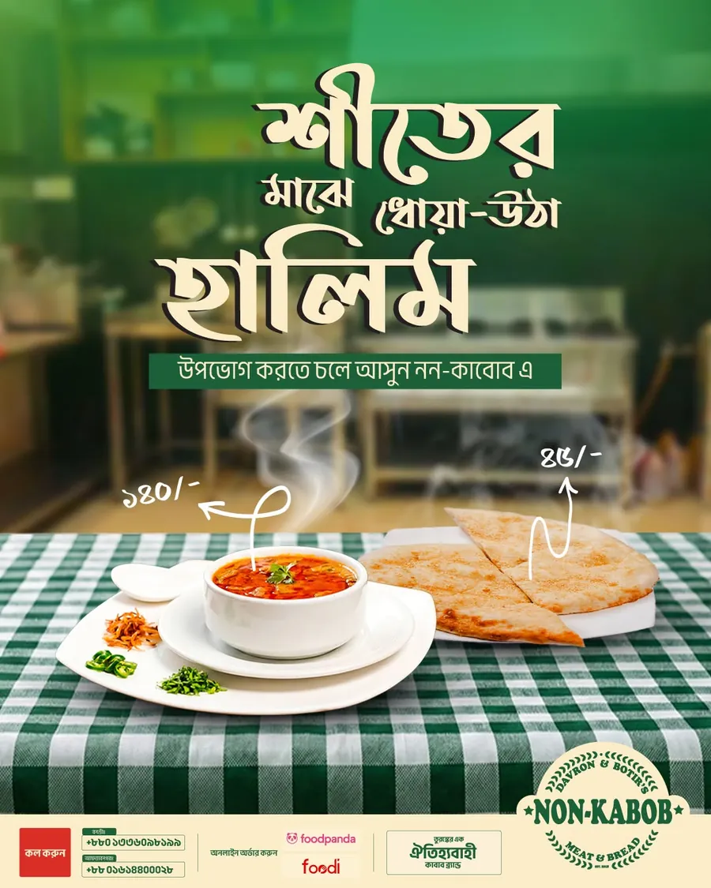
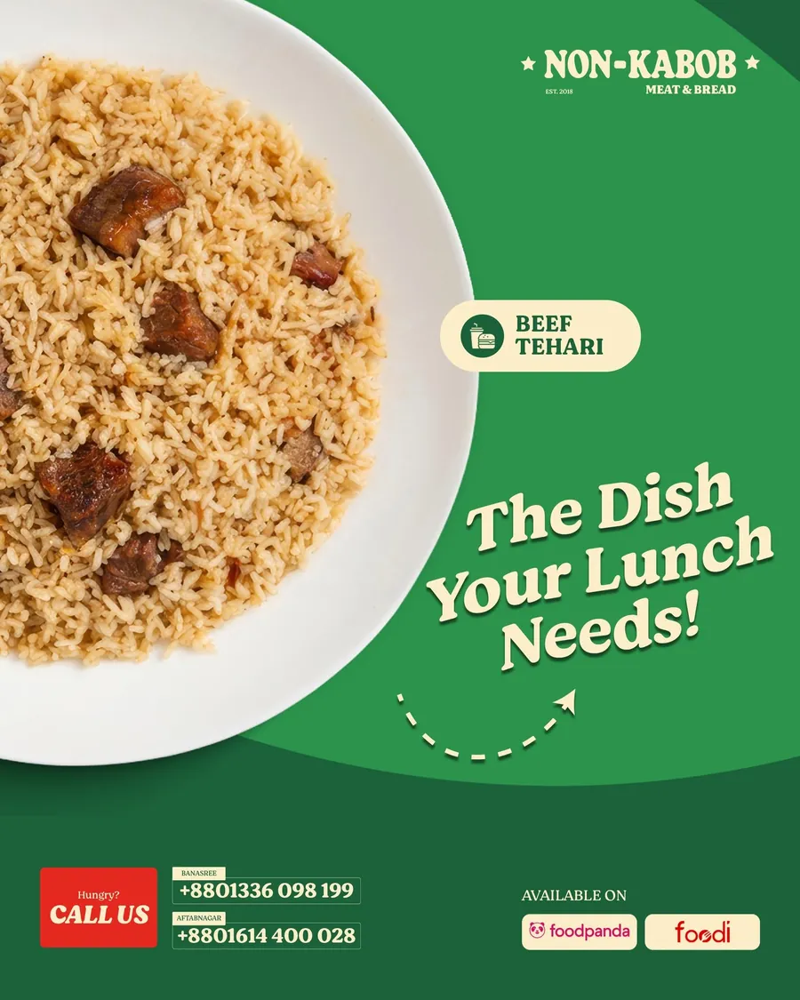

Non-Kabob Dhaka · Social media
Food storytelling for a Turkish-Bengali kebab brand
Non-Kabob grills the Turkish way for Bengali taste buds, in two east Dhaka neighbourhoods. A great story. The Facebook page just wasn't telling it.
At a glance
- Every post anchored to one idea: Turkish grilling, Bengali flavours.
- Copy written for local families, with callouts for both branches.
- A breakfast, lunch and dine-out rhythm to show it's open all day.
- Client
- Non-Kabob Dhaka
- Where
- Banasree & Aftabnagar, Dhaka
- Channel
- Work
- Captions, video scripts




01 / 04
The problem
Nice food photos, no story. Posts never said why Turkish, why Bengali or why Banasree, so they blended into Dhaka's very crowded food feed.
Most local food brands compete on price or distance. Non-Kabob had something better, a concept, and wasn't using it.
02 / 04
The plan
Lead with the fusion story, every single time.
- Open with the Turkish technique: open-flame grilling, slow-marinated meat. Then bring it home: flavours your family already loves, cooked a new way.
- Talk to Banasree and Aftabnagar families directly, so it feels like the neighbourhood spot.
- Use a breakfast, lunch and dine-out rhythm. Serving all three was an edge nobody was talking about.
03 / 04
What I did
- Signature dish posts that put the Turkish heritage first.
- Short video scripts around the open flame, the brand's most shareable visual.
- Location callouts for each branch.
- Eid and family gathering posts with dine-out prompts for groups of 4–8.
04 / 04
How it went
3dayparts: breakfast, lunch, dine-out
2branches named in the copy
Familiesthe main audience
1story in every post
The client kept their analytics private, so this shows the work rather than the numbers.